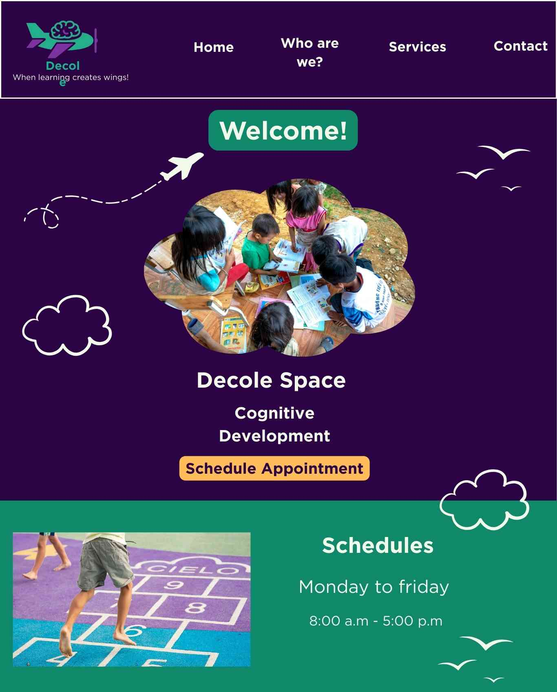
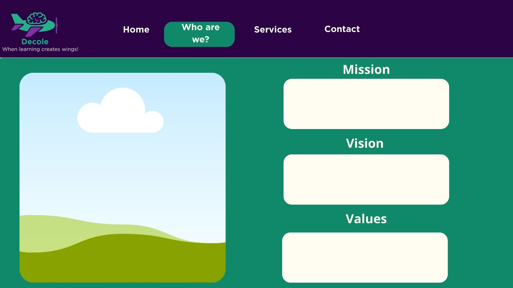
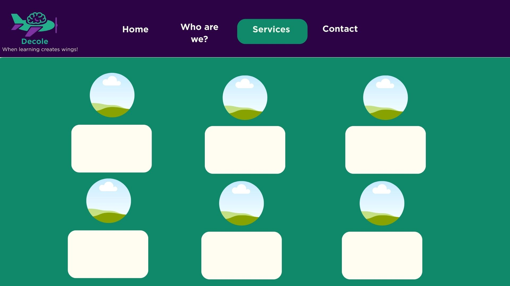
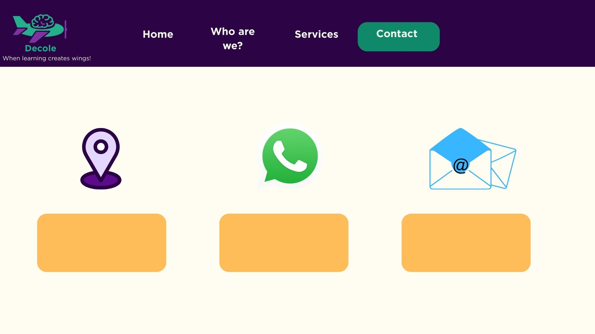

1. Site Name
Site Name: Decole Clínica Psicopedagógica
The name "Decole" represents development, growth, and autonomy in the learning process. The clinic’s purpose is to help children, adolescents, and adults overcome learning difficulties and gain confidence to move forward in their educational and personal journeys.
2. Site Purpose
The main purpose of this website is to present the Decole Psychopedagogical Clinic, its services, and its professional approach. The site provides clear and welcoming information for families, schools, and adults facing learning difficulties.
The website also aims to facilitate contact, appointment scheduling, and build trust in psychopedagogical care.
- Informational
- Institutional
- Client acquisition
- Educational
3. Target Audience
Primary Audience:
- Parents and guardians of children and adolescents
- Families seeking guidance on learning difficulties
- Adults with unresolved learning difficulties
- Schools and education professionals
Secondary Audience:
- Teachers
- Pedagogical coordinators
- Psychologists and health and education professionals
Expected visitor age range: 25 to 55 years old, mainly parents and legal guardians.
4. Scenarios
- “My child is having difficulties at school. How can psychopedagogy help?”
- “I am an adult and have always struggled with learning. Can I still seek support?”
- “Does the clinic support schools and provide guidance for teachers and families?”
- “My child is hospitalized long-term. Can psychopedagogy help maintain learning?”
- “How can psychopedagogical support help hospitalized patients and healthcare institutions?”
5. Color Schema
- Primary Color (#2c0344): Header, footer, main headings.
- Secondary Color (#10896b): Navigation items and visual highlights.
- Accent Color (#f2f9ea): Page background and soft sections.
6. Typography
The website uses the Roboto font family for all text elements. Using a single font ensures consistency, accessibility, and a clean, professional appearance.
7. Site Pages
The website will be structured into the following pages. Detailed content will be developed in each individual page.
- Home
- Who are we?
- Services
- Contact
8. Services
- Psychopedagogical assessment
- Psychopedagogical intervention
- Family guidance
- School support
- Support for learning difficulties
- Psychopedagogical support for long-term hospitalized patients and healthcare institutions
9. Wireframes
Below are the design wireframes for the pages, illustrating the layout of elements on mobile devices with small screens.
Home – Mobile View

Home – Desktop View

Other Pages (Wireframes)
Wireframes add to planning for content development:



Home – Mobile View:
- Header with logo, slogan, and navigation menu
- Hero section with welcome message and main title
- Call-to-action button: “ Schedule Appointment”
- Featured image related to child development
- Business hours section
Home – Desktop View:
- Wider layout with horizontal navigation
- Hero section divided into text and image columns
- Highlighted CTA button for appointment scheduling
- Additional informational blocks displayed side by side
10. Tone and Style
The website tone is welcoming, lightly child-friendly, institutional, technical when appropriate, and modern and visually light.